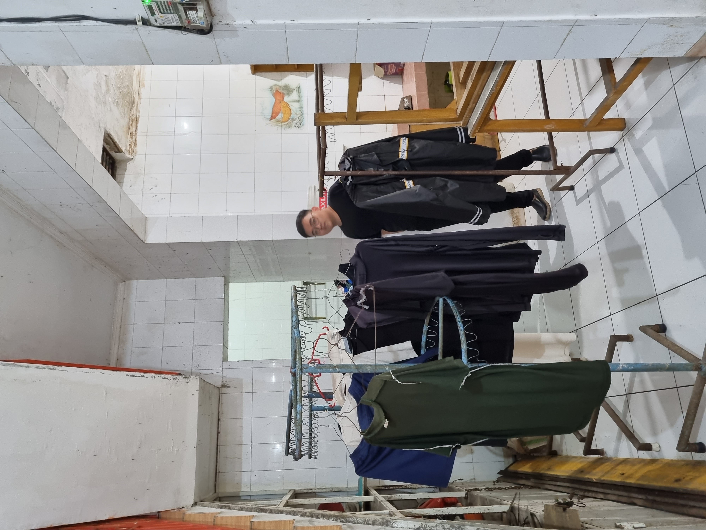
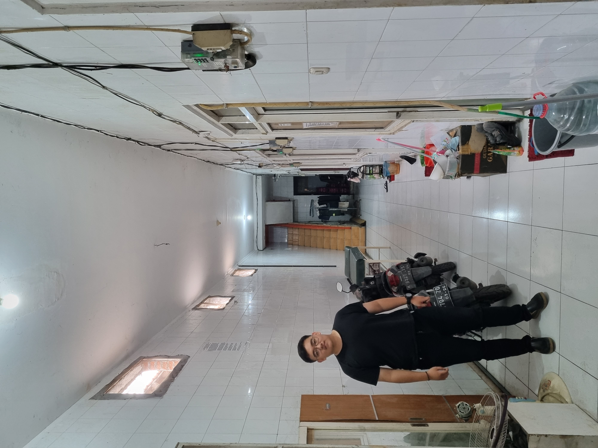
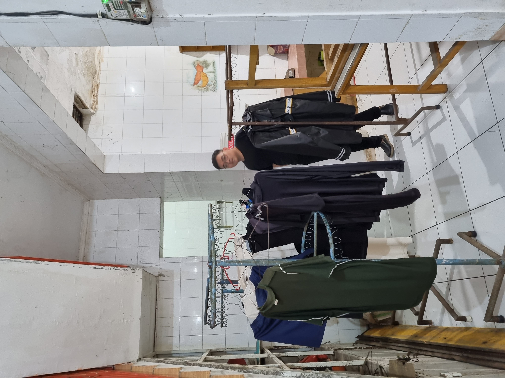
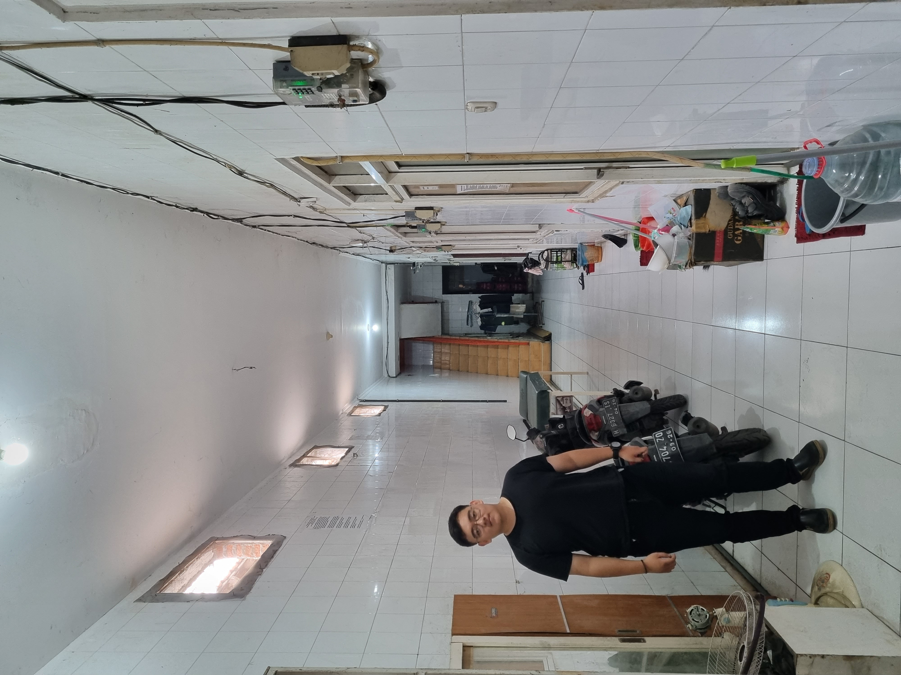

TENTANG KITA
Profil dan Sejarah Singkat
Nama pemilik kost atau pengelola yaitu Ibu Endang dan Nama Kos-kos san adalah Kost Kurnia. Kos ini berdiri dari
8 Tahun yang lalu yaitu pada Tahun 2016, Kos ini memiliki nsejarah yang panjang dan berdiri setelah banyak perjuangan
yang dilakukan oleh ibu Endang dalam membangun sebuah kos yang nyaman, bersih dan aman serta lokasinya
yang strategis yaitu ditengah kota, yang dapat bermanfaat bagi pekerja maupun mahasiswa yang memiliki
pekerjaan / Pendidikan yang harus diselesaikan di semarang namun tidak punya tempat tinggal.
Visi
Menjadi pilihan utama bagi penghuni kos yang mencari hunian
nyaman, aman, dan strategis dengan pelayanan terbaik.
Misi
1. Menyediakan fasilitas lengkap dan berkualitas yang mendukung kebutuhan penghuni.
2. Memberikan lingkungan yang aman, bersih , dan nyaman untuk mendukung produktivitas penghuni.
3. Menjalin hubungan baik dengan penghuni melalui pelayanan yang ramah, cepat, dan profesional.
4. memastikan harga sewa kompetitif dengan nilai tambah yang memuaskan.
5. Berkontribusi pada kenyamanan komunitas sekitar dengan menjaga etika dan tata tertib lingkungan.
Keunggulan Kost
Tempat Parkir Motor
yang Luas dan Aman
Memudahkan penghuni yang
memiliki kendaraan untuk parkir
tanpa khawatir akan kehilangan atau kerusakan
Kamar
Bervariasi
Menjamin kenyamanan tinggal,
terutama di daerah dengan cuaca panas dengan adanya
penyediaan kamar ber AC
maupun kipas angin
Lokasi di
Tengah Kota
Strategis dan mudah dijangkau dari berbagai tempat penting
seperti pusat perbelanjaan, perkantoran, universitas, dan tempat hiburan. Menghemat waktu dan biaya transportasi penghuni.
Keamanan Terjamin
dengan CCTV
Sistem keamanan 24 jam yang
memberikan rasa tenang bagi penghuni bagi penghuni. Meminimalkan risiko
kejahatan dengan pemantauan
real-time di area kos.
Layanan Yang Tersedia
Kamar Ber-AC
Wi-Fi Berkecapatan
Tinggi
Keamanan CCTV
24 Jam
Dapur Bersama
Laundry Mandiri atau
Layanan Laundry
Furnitur Kamar
Kamar Mandi dalam
atau Luar
Kontak Kami
Alamat, nomor telepon, whatsapp, dan email untuk pertanyaan atau pemesanan.
Jam operasional atau waktu yang tepat untuk menghubungi pemilik kos:
Jam operasional pemilik kos dapat dihubungi adalah sekitar Jam 09.00-18.00 WIB.

Galeri Foto Kost


.jpg) 


